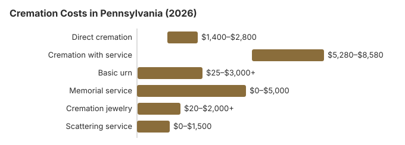

Cremation Costs in Pennsylvania (2026)
Cremation pricing in Pennsylvania is simpler than traditional burial but can still vary by thousands of dollars between providers. In Pennsylvania, direct cremation starts around $2,000 while cremation with a full service averages $6,600, a gap of $4,600. This guide walks through what's included at each price point and how Pennsylvania's 52% cremation rate shapes local options.
The Main Kinds of Cremation in Pennsylvania
Direct Cremation
- Most affordable cremation option
- No viewing or ceremony before cremation
- Body transferred directly to crematory
- Remains returned to family
- Memorial service can be held later
Cremation with Service
- Traditional funeral service before cremation
- Viewing or visitation possible
- Ceremony at funeral home or church
- Typically includes basic urn
- More similar to traditional funeral experience
Pennsylvania Cremation Prices by Item
| Item | Average Cost | Range |
|---|---|---|
| Direct cremation | $2,000 | $1,400 – $2,800 |
| Cremation with service | $6,600 | $5,280 – $8,580 |
| Basic urn | $50 – $300 | $25 – $3,000+ |
| Memorial service | $500 – $2,000 | $0 – $5,000 |
| Cremation jewelry | $50 – $500 | $20 – $2,000+ |
| Scattering service | $200 – $600 | $0 – $1,500 |
Methodology note: These figures are our estimates, not a survey of local providers, and they are not a quote or professional advice. See how we calculate them or read the full disclaimer.
State sources: Pennsylvania DHS.

What to Know Before Choosing Cremation in Pennsylvania
When considering cremation in Pennsylvania, keep these important points in mind:
- Get the Pennsylvania provider's General Price List before you agree to anything; the direct cremation line must state what it includes, and the price should cover transport, the cremation itself and a basic container for the ashes.
- A Pennsylvania provider offering direct cremation must let you use an unfinished wood box or other alternative container instead of a casket (FTC Funeral Rule, 16 CFR 453.3(b)). Timing rules sit in the Board's regulations. 49 Pa. Code §13.212 allows a body to reach the crematory before the 24-hour mark only with explicit written instructions not to cremate early, backed by a signed receipt the funeral director keeps, and §13.184 bars a funeral home from holding remains more than 10 days in total without the Board's special permission.
- Ask how long the Pennsylvania crematory usually takes to return the ashes once the permit is issued, and whether the quoted price includes delivery or only pickup.
Keeping a Cremation in Pennsylvania Affordable
Cremation costs in Pennsylvania can be reduced with these strategies:
- Compare at least 3 cremation providers in Pennsylvania: Request written General Price Lists.
- Ask about current turnaround: Crematory capacity around Philadelphia can stretch turnaround to 10-14 days during peak periods.
How Pennsylvania Cremation Compares With the Region
In Pennsylvania, where winter complicates traditional burial, cremation has a practical scheduling advantage most families underestimate: ashes can be interred or scattered any time of year, which means the service does not have to be planned around frozen-ground delays. This alone pushes some Northeastern families toward cremation, even before considering the $6,500 cost difference versus traditional burial in Pennsylvania.
Cremation Resources
- Funeral Consumers AllianceNonprofit advocacy: compare cremation providers
- Cremation Jewelry GuideMemorial keepsakes and remembrance options
- Cremation vs. Burial CostsSide-by-side cost comparison
- Pet Cremation CostsOptions and prices for pet cremation and memorials
- Final Expense InsuranceCoverage options to help pay for cremation costs
Compare Funeral Costs
- Average Funeral Cost in 2026National cost breakdown with real prices
- Cremation vs. Burial Cost ComparisonSide-by-side price comparison to help you decide
- Funeral Cost BreakdownEvery line item explained: know what you're paying for
- Cheapest Funeral OptionsLower-cost alternatives, with typical price ranges
- Direct Cremation: Most Affordable OptionNFDA 2023 median $2,645 with a family-supplied container (latest available)
- How to Compare Funeral PricesStep-by-step guide to getting the best price
Frequently Asked Questions
What does cremation cost in Pennsylvania in 2026?
Cremation in Pennsylvania runs from roughly $2,000 for the simplest direct option up to about $6,600 when paired with a viewing or ceremony.
Which cremation options exist in Pennsylvania?
Pennsylvania providers typically offer three tiers. Direct cremation at $2,000 is the simplest Pennsylvania tier: no service or viewing, the body cremated and the ashes returned. Traditional cremation at $6,600 adds a full funeral home service before the cremation, $4,600 more than the direct tier in Pennsylvania.
What are Pennsylvania's cremation regulations?
In short, Pennsylvania sets a 24-hour minimum before cremation, and the crematory also needs the death certificate, a cremation permit and a signed authorization from the next of kin or designated agent. The statute behind the Pennsylvania timing rule, whether a funeral director must be involved, and the licensing board's phone number are listed in the cremation rules section further down this page.
Is ash scattering legal in Pennsylvania?
Yes. The Funeral Consumers Alliance of Pennsylvania notes that no state law controls where ashes are scattered, so permission from the landowner is what matters. State parks are an exception: the Department of Conservation and Natural Resources asks for the park manager's approval, and a group event needs DCNR's written authorization.
Gettysburg, Valley Forge and the Delaware Water Gap fall under the National Park Service rule (36 CFR 2.62), which requires a permit or a designated area. A problem with the crematory or funeral home itself, rather than the scattering site, goes to the State Board of Funeral Directors at 1-833-367-2762.
How does Pennsylvania’s cremation rate compare with the U.S.?
At about 52% in our estimate, Pennsylvania sits more than 11 points under the 63.4% national rate NFDA projected for 2025. Families who choose cremation here usually mention cost and timing: direct cremation is about $2,000, a memorial can be held weeks later, and a funeral service with burial averages around $8,500 before cemetery fees. The county coroner must authorize each cremation, and it cannot take place until 24 hours after death (49 Pa. Code § 13.212).
How long does cremation take in Pennsylvania?
In Pennsylvania, the cremation process itself takes 2 to 3 hours. Direct cremation ($2,000) has the shortest timeline because no viewing or ceremony is involved, though Pennsylvania law still requires 24 hours to pass after death (49 Pa. Code § 13.212).
Do I have to skip the service if I choose cremation in Pennsylvania?
Pennsylvania providers offer cremation with a full service (visitation, ceremony, and then cremation instead of burial) for about $6,600. Of the Pennsylvania prices above, only direct cremation at $2,000 omits the service entirely.
More for Pennsylvania
The coroner's $50 cremation authorization in Pennsylvania
Pennsylvania sets the coroner's charge for a cremation by statute, not county by county. Under the Coroner's Act, the coroner shall charge and collect $50 for a cremation or disposition authorization. The same section sets $500 for an autopsy report and $100 each for a toxicology report or a coroner's report (16 Pa.C.S. § 13952; checked October 29, 2026).
- How it is billed: the funeral home usually pays the coroner or medical examiner and passes the $50 on as a cash advance item. Allegheny County, for example, bills the requesting funeral home and lets it pay online.
- What the review needs: the coroner checks a complete Pennsylvania death certificate before authorizing. A missing certifier signature or a vague cause of death holds things up.
Cremation rules and help in Pennsylvania
The licensing office for cremation providers in Pennsylvania is the Pennsylvania State Board of Funeral Directors; its number is 1-833-367-2762.
Because Pennsylvania is not on the Funeral Consumers Alliance list of nine states that restrict family-directed care, the family may deal with a Pennsylvania crematory directly once the cremation permit has been issued.
Before a cremation can happen: Pennsylvania bars cremation until 24 hours after death; the county coroner must authorize it and the next of kin holds sole authority to consent (49 Pa. Code § 13.212).
Pennsylvania DHS can pay up to $750 toward a cremation for an eligible person, but only through an enrolled funeral director, and an estate with $1,500 or more in resources does not qualify (55 Pa. Code ch. 283). (Source: Pennsylvania DHS.)
Cremated remains of an eligible Pennsylvania veteran can be placed in a VA national cemetery columbarium or in-ground site at no charge for the space. Options in Pennsylvania include Washington Crossing National Cemetery (215-222-7510), Indiantown Gap National Cemetery (717-865-5254), and National Cemetery of the Alleghenies (724-746-4363). See cem.va.gov.
Next steps for a cremation in Pennsylvania
- Ask Pennsylvania cremation providers to itemize transport, the container and the crematory fee before you choose one.
- Allow at least 24 hours after death in Pennsylvania, plus time for the permit, before the cremation date.
- Confirm the Pennsylvania cremation provider is enrolled with DHS before relying on the $750 payment.
- Note the board's number, 1-833-367-2762, before you pay a cremation provider.